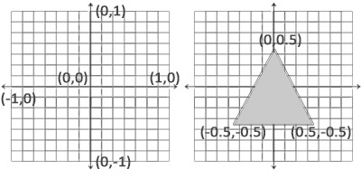
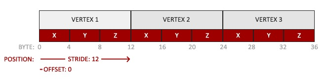

<!DOCTYPE html>
<html>
<head><meta name="generator" content="Hexo 3.9.0">
  <meta charset="utf-8">
  
  <title>Android OpenGL ES（二）绘制三角形 | what is your main focus for today?</title>
  <meta name="viewport" content="width=device-width, initial-scale=1, maximum-scale=1">
  <meta name="description" content="通过上篇文章的学习，现在已经了解到，要想在 Android 端使用 OpenGL ES 绘制图形，必须创建 OpenGL ES 环境和视图窗口，具体来说就是构建 EGL 环境，即 OpenGL ES 和 Android 底层平台视窗系统之间的接口。另外 OpenGL ES 2.0 版本为可编程管线，我们就可以编写着色器程序来确定绘制内容，即编写 Vertex Shader 顶点着色器和 Fragm">
<meta name="keywords" content="OpenGL">
<meta property="og:type" content="article">
<meta property="og:title" content="Android OpenGL ES（二）绘制三角形">
<meta property="og:url" content="http://yhaowa.gitee.io/2296ca3/index.html">
<meta property="og:site_name" content="what is your main focus for today?">
<meta property="og:description" content="通过上篇文章的学习，现在已经了解到，要想在 Android 端使用 OpenGL ES 绘制图形，必须创建 OpenGL ES 环境和视图窗口，具体来说就是构建 EGL 环境，即 OpenGL ES 和 Android 底层平台视窗系统之间的接口。另外 OpenGL ES 2.0 版本为可编程管线，我们就可以编写着色器程序来确定绘制内容，即编写 Vertex Shader 顶点着色器和 Fragm">
<meta property="og:locale" content="zh-CN">
<meta property="og:image" content="http://yhaowa.gitee.io/img/17.jpg">
<meta property="og:image" content="http://yhaowa.gitee.io/img/18.jpg">
<meta property="og:updated_time" content="2020-12-06T06:59:08.620Z">
<meta name="twitter:card" content="summary">
<meta name="twitter:title" content="Android OpenGL ES（二）绘制三角形">
<meta name="twitter:description" content="通过上篇文章的学习，现在已经了解到，要想在 Android 端使用 OpenGL ES 绘制图形，必须创建 OpenGL ES 环境和视图窗口，具体来说就是构建 EGL 环境，即 OpenGL ES 和 Android 底层平台视窗系统之间的接口。另外 OpenGL ES 2.0 版本为可编程管线，我们就可以编写着色器程序来确定绘制内容，即编写 Vertex Shader 顶点着色器和 Fragm">
<meta name="twitter:image" content="http://yhaowa.gitee.io/img/17.jpg">
  
    <link rel="alternative" href="/atom.xml" title="what is your main focus for today?" type="application/atom+xml">
  
  
    <link rel="icon" href="/favicon.png">
  
  <link rel="stylesheet" href="/css/style.css">
  <!--[if lt IE 9]><script src="//cdnjs.cloudflare.com/ajax/libs/html5shiv/3.7/html5shiv.min.js"></script><![endif]-->
  
</head></html>
<body>
<div id="container">
  <div id="wrap">
    <header id="header">
  <div id="banner"></div>
  <div id="header-outer" class="outer">
    <div id="header-title" class="inner">
      <h1 id="logo-wrap">
        <a href="/" id="logo">what is your main focus for today?</a>
      </h1>
      
    </div>
    <div id="header-inner" class="inner">
      <nav id="main-nav">
        <a id="main-nav-toggle" class="nav-icon"></a>
        
          <a class="main-nav-link" href="/">首页</a>
        
          <a class="main-nav-link" href="/archives">归档</a>
        
      </nav>
      <nav id="sub-nav">
        
          <a id="nav-rss-link" class="nav-icon" href="/atom.xml" title="RSS Feed"></a>
        
        <a id="nav-search-btn" class="nav-icon" title="Search"></a>
      </nav>
      <div id="search-form-wrap">
        <form action="//www.baidu.com/baidu" method="get" accept-charset="utf-8" class="search-form">
          <input type="search" name="word" maxlength="20" class="search-form-input" placeholder="Search">
          <input type="submit" value="" class="search-form-submit">
          <input name=tn type=hidden value="bds">
          <input name=cl type=hidden value="3">
          <input name=ct type=hidden value="2097152">
          <input type="hidden" name="si" value="yhaowa.gitee.io">
        </form>
      </div>
    </div>
  </div>
</header>
    <div class="outer">
      <section id="main"><article id="post-Android-OpenGL-ES（二）绘制三角形" class="article article-type-post" itemscope itemprop="blogPost">
  <div class="article-meta">
    <a href="/2296ca3/" class="article-date">
  <time datetime="2019-06-16T08:39:50.000Z" itemprop="datePublished">2019-06-16</time>
</a>
    
  <div class="article-category">
    <a class="article-category-link" href="/categories/音视频/">音视频</a>
  </div>

  </div>
  <div class="article-inner">
    
    
      <header class="article-header">
        
  
    <h1 class="article-title" itemprop="name">
      Android OpenGL ES（二）绘制三角形
    </h1>
  

      </header>
    
    <div class="article-entry" itemprop="articleBody">
      
        <p>通过上篇文章的学习，现在已经了解到，要想在 Android 端使用 OpenGL ES 绘制图形，必须创建 OpenGL ES 环境和视图窗口，具体来说就是构建 EGL 环境，即 OpenGL ES 和 Android 底层平台视窗系统之间的接口。另外 OpenGL ES 2.0 版本为可编程管线，我们就可以编写着色器程序来确定绘制内容，即编写 Vertex Shader 顶点着色器和 Fragment Shader 片元着色器。</p>
<p>而这些工作可以通过 GLSurfaceView 非常简单的实现。</p>
<a id="more"></a>
<p>在介绍 GLSurfaceView 之前先来看下 Android 系统提供的与 OpenGL ES 相关的包：</p>
<ul>
<li>javax.microedition.khronos.opengles： 存放 GL 绘图指令相关代码</li>
<li>javax.microedition.khronos.egl： 存放 EGL 管理相关代码，包括 Display、surface 等</li>
<li>android.opengl： 存放 GL 辅助类，连接 OpenGL 与 Android View，Activity 等</li>
</ul>
<p>其中 GLSurfaceView 处于 android.opengl 包中，GLSurfaceView 具有以下特性：</p>
<ul>
<li>内置 EGL 管理，自带 GL 上下文环境和 GLThread 绘制线程</li>
<li>起到连接 OpenGL ES 与 Android 的 View 层次结构之间的桥梁作用</li>
<li>使得 OpenGL ES 库适应于 Activity 生命周期</li>
<li>继承自 SurfaceView，拥有 SurfaceView 的全部特性，绘制结果会输出到 SurfaceView 所提供的 Surface 上</li>
<li>提供了方便使用的调试工具来跟踪 OpenGL ES 函数调用以帮助检查错误</li>
</ul>
<p>通过 GLSurfaceView 的 setRenderer 方法可设置要渲染的效果，即 GLSurfaceView.Renderer 渲染器接口，该接口方法：</p>
<ul>
<li>onSurfaceCreated：渲染线程开启时调用，可做初始化背景色、初始化纹理资源等工作</li>
<li>onSurfaceChanged：窗口尺寸改变时调用，通常会设置视窗范围或投影矩阵等</li>
<li>onDrawFrame：外部请求渲染一次就调用一次，可在此载入着色器程序、激活绑定纹理以及调用绘制</li>
</ul>
<p>下面来看具体如何绘制一个三角形：</p>
<figure class="highlight java"><table><tr><td class="gutter"><pre><span class="line">1</span><br><span class="line">2</span><br><span class="line">3</span><br><span class="line">4</span><br><span class="line">5</span><br><span class="line">6</span><br><span class="line">7</span><br><span class="line">8</span><br><span class="line">9</span><br><span class="line">10</span><br><span class="line">11</span><br><span class="line">12</span><br><span class="line">13</span><br><span class="line">14</span><br><span class="line">15</span><br><span class="line">16</span><br><span class="line">17</span><br><span class="line">18</span><br><span class="line">19</span><br><span class="line">20</span><br><span class="line">21</span><br><span class="line">22</span><br><span class="line">23</span><br><span class="line">24</span><br><span class="line">25</span><br><span class="line">26</span><br><span class="line">27</span><br><span class="line">28</span><br><span class="line">29</span><br><span class="line">30</span><br><span class="line">31</span><br><span class="line">32</span><br><span class="line">33</span><br><span class="line">34</span><br><span class="line">35</span><br><span class="line">36</span><br><span class="line">37</span><br><span class="line">38</span><br><span class="line">39</span><br><span class="line">40</span><br><span class="line">41</span><br><span class="line">42</span><br><span class="line">43</span><br><span class="line">44</span><br><span class="line">45</span><br><span class="line">46</span><br><span class="line">47</span><br><span class="line">48</span><br><span class="line">49</span><br><span class="line">50</span><br><span class="line">51</span><br><span class="line">52</span><br><span class="line">53</span><br><span class="line">54</span><br><span class="line">55</span><br><span class="line">56</span><br><span class="line">57</span><br><span class="line">58</span><br><span class="line">59</span><br><span class="line">60</span><br><span class="line">61</span><br><span class="line">62</span><br><span class="line">63</span><br><span class="line">64</span><br><span class="line">65</span><br><span class="line">66</span><br><span class="line">67</span><br><span class="line">68</span><br><span class="line">69</span><br><span class="line">70</span><br><span class="line">71</span><br><span class="line">72</span><br><span class="line">73</span><br><span class="line">74</span><br><span class="line">75</span><br><span class="line">76</span><br><span class="line">77</span><br><span class="line">78</span><br><span class="line">79</span><br><span class="line">80</span><br><span class="line">81</span><br><span class="line">82</span><br><span class="line">83</span><br><span class="line">84</span><br><span class="line">85</span><br><span class="line">86</span><br><span class="line">87</span><br><span class="line">88</span><br><span class="line">89</span><br><span class="line">90</span><br><span class="line">91</span><br><span class="line">92</span><br><span class="line">93</span><br></pre></td><td class="code"><pre><span class="line"></span><br><span class="line"><span class="keyword">public</span> <span class="class"><span class="keyword">class</span> <span class="title">Triangle</span> <span class="keyword">implements</span> <span class="title">GLSurfaceView</span>.<span class="title">Renderer</span> </span>&#123;</span><br><span class="line"></span><br><span class="line">    <span class="comment">//顶点着色器</span></span><br><span class="line">    <span class="keyword">private</span> <span class="keyword">static</span> <span class="keyword">final</span> String vertexShaderResource =</span><br><span class="line">            <span class="string">"attribute vec3 vPosition;"</span> +</span><br><span class="line">                    <span class="string">"void main() &#123;"</span> +</span><br><span class="line">                    <span class="string">"  gl_Position = vec4(vPosition.x, vPosition.y, vPosition.z, 1.0);"</span> +</span><br><span class="line">                    <span class="string">"&#125;"</span>;</span><br><span class="line">    <span class="comment">//片段着色器</span></span><br><span class="line">    <span class="keyword">private</span> <span class="keyword">static</span> <span class="keyword">final</span> String fragmentShaderResource =</span><br><span class="line">            <span class="string">"precision mediump float;"</span> +</span><br><span class="line">                    <span class="string">"uniform vec4 vColor;"</span> +</span><br><span class="line">                    <span class="string">"void main() &#123;"</span> +</span><br><span class="line">                    <span class="string">"  gl_FragColor = vColor;"</span> +</span><br><span class="line">                    <span class="string">"&#125;"</span>;</span><br><span class="line">    <span class="comment">//顶点</span></span><br><span class="line">    <span class="keyword">private</span> <span class="keyword">final</span> <span class="keyword">float</span>[] vertexCoords = <span class="keyword">new</span> <span class="keyword">float</span>[]&#123;</span><br><span class="line">            <span class="number">0.0f</span>, <span class="number">0.5f</span>, <span class="number">0.0f</span>, <span class="comment">// top</span></span><br><span class="line">            -<span class="number">0.5f</span>, -<span class="number">0.5f</span>, <span class="number">0.0f</span>, <span class="comment">// bottom left</span></span><br><span class="line">            <span class="number">0.5f</span>, -<span class="number">0.5f</span>, <span class="number">0.0f</span>  <span class="comment">// bottom right</span></span><br><span class="line">    &#125;;</span><br><span class="line"></span><br><span class="line">    <span class="keyword">private</span> <span class="keyword">final</span> <span class="keyword">float</span> color[] = &#123;<span class="number">1.0f</span>, <span class="number">0f</span>, <span class="number">0f</span>, <span class="number">1.0f</span>&#125;; <span class="comment">//red</span></span><br><span class="line"></span><br><span class="line">    <span class="comment">// 着色器程序</span></span><br><span class="line">    <span class="keyword">private</span> <span class="keyword">int</span> mProgram;</span><br><span class="line">    <span class="comment">// 顶点坐标数据</span></span><br><span class="line">    <span class="keyword">private</span> FloatBuffer vertexFloatBuffer;</span><br><span class="line"></span><br><span class="line"></span><br><span class="line">    <span class="meta">@Override</span></span><br><span class="line">    <span class="function"><span class="keyword">public</span> <span class="keyword">void</span> <span class="title">onSurfaceCreated</span><span class="params">(GL10 gl, EGLConfig config)</span> </span>&#123;</span><br><span class="line">        <span class="comment">//设置清空屏幕后的背景色</span></span><br><span class="line">        GLES30.glClearColor(<span class="number">0.5f</span>, <span class="number">0.5f</span>, <span class="number">0.5f</span>, <span class="number">1.0f</span>);</span><br><span class="line">        <span class="comment">//构建顶点着色器</span></span><br><span class="line">        <span class="keyword">int</span> vertexShader = GLES30.glCreateShader(GLES30.GL_VERTEX_SHADER);</span><br><span class="line">        GLES30.glShaderSource(vertexShader, vertexShaderResource);</span><br><span class="line">        GLES30.glCompileShader(vertexShader);</span><br><span class="line">        <span class="comment">//构建片段着色器</span></span><br><span class="line">        <span class="keyword">int</span> fragmentShader = GLES30.glCreateShader(GLES30.GL_FRAGMENT_SHADER);</span><br><span class="line">        GLES30.glShaderSource(fragmentShader, fragmentShaderResource);</span><br><span class="line">        GLES30.glCompileShader(fragmentShader);</span><br><span class="line">        <span class="comment">//构建着色器程序，并将顶点着色器和片段着色器链接进来</span></span><br><span class="line">        mProgram = GLES30.glCreateProgram();</span><br><span class="line">        GLES30.glAttachShader(mProgram, vertexShader);</span><br><span class="line">        GLES30.glAttachShader(mProgram, fragmentShader);</span><br><span class="line">        GLES30.glLinkProgram(mProgram);</span><br><span class="line">        <span class="comment">//顶点着色器和片段着色器链接到着色器程序后就无用了</span></span><br><span class="line">        GLES30.glDeleteShader(vertexShader);</span><br><span class="line">        GLES30.glDeleteShader(fragmentShader);</span><br><span class="line">        <span class="comment">//转换为需要的顶点数据格式</span></span><br><span class="line">        vertexFloatBuffer = floatToBuffer(vertexCoords);</span><br><span class="line">    &#125;</span><br><span class="line"></span><br><span class="line">    <span class="meta">@Override</span></span><br><span class="line">    <span class="function"><span class="keyword">public</span> <span class="keyword">void</span> <span class="title">onSurfaceChanged</span><span class="params">(GL10 gl, <span class="keyword">int</span> width, <span class="keyword">int</span> height)</span> </span>&#123;</span><br><span class="line">        <span class="comment">//设置视窗</span></span><br><span class="line">        GLES30.glViewport(<span class="number">0</span>, <span class="number">0</span>, width, height);</span><br><span class="line">    &#125;</span><br><span class="line"></span><br><span class="line">    <span class="meta">@Override</span></span><br><span class="line">    <span class="function"><span class="keyword">public</span> <span class="keyword">void</span> <span class="title">onDrawFrame</span><span class="params">(GL10 gl)</span> </span>&#123;</span><br><span class="line">        <span class="comment">//清空屏幕，擦除屏幕上所有的颜色，用 glClearColor 定义的颜色填充</span></span><br><span class="line">        GLES30.glClear(GLES30.GL_COLOR_BUFFER_BIT);</span><br><span class="line">        <span class="comment">//在当前 EGL 环境激活着色器程序</span></span><br><span class="line">        GLES30.glUseProgram(mProgram);</span><br><span class="line">        <span class="comment">//获取顶点着色器的 vPosition 成员句柄</span></span><br><span class="line">        <span class="keyword">int</span> positionHandle = GLES30.glGetAttribLocation(mProgram, <span class="string">"vPosition"</span>);</span><br><span class="line">        <span class="comment">//启用句柄</span></span><br><span class="line">        GLES30.glEnableVertexAttribArray(positionHandle);</span><br><span class="line">        <span class="comment">//设置顶点坐标数据</span></span><br><span class="line">        GLES30.glVertexAttribPointer(positionHandle, <span class="number">3</span>, GLES30.GL_FLOAT,</span><br><span class="line">                <span class="keyword">false</span>, <span class="number">3</span> * <span class="number">4</span>, vertexFloatBuffer);</span><br><span class="line">        <span class="comment">//获取片元着色器的 vColor 成员句柄</span></span><br><span class="line">        <span class="keyword">int</span> colorHandle = GLES30.glGetUniformLocation(mProgram, <span class="string">"vColor"</span>);</span><br><span class="line">        <span class="comment">//设置颜色</span></span><br><span class="line">        GLES30.glUniform4fv(colorHandle, <span class="number">1</span>, color, <span class="number">0</span>);</span><br><span class="line">        <span class="comment">//绘制三角形</span></span><br><span class="line">        GLES30.glDrawArrays(GLES30.GL_TRIANGLE_STRIP, <span class="number">0</span>, <span class="number">3</span>);</span><br><span class="line">        <span class="comment">//禁止顶点数组的句柄</span></span><br><span class="line">        GLES30.glDisableVertexAttribArray(positionHandle);</span><br><span class="line">    &#125;</span><br><span class="line"></span><br><span class="line">    <span class="function"><span class="keyword">private</span> FloatBuffer <span class="title">floatToBuffer</span><span class="params">(<span class="keyword">float</span>[] a)</span> </span>&#123;</span><br><span class="line">        ByteBuffer buffer = ByteBuffer.allocateDirect(a.length * <span class="number">4</span>); <span class="comment">//float占4个字节</span></span><br><span class="line">        buffer.order(ByteOrder.nativeOrder());</span><br><span class="line">        FloatBuffer byteBuffer = buffer.asFloatBuffer();</span><br><span class="line">        byteBuffer.put(a);</span><br><span class="line">        byteBuffer.position(<span class="number">0</span>);</span><br><span class="line">        <span class="keyword">return</span> byteBuffer;</span><br><span class="line">    &#125;</span><br><span class="line">&#125;</span><br></pre></td></tr></table></figure>
<h4 id="顶点输入"><a href="#顶点输入" class="headerlink" title="顶点输入"></a>顶点输入</h4><p>要绘制一个三角形，就要确定三个顶点的 3D 坐标（OpenGL 是一个 3D 图形库，在 OpenGL 中指定的所有坐标都需要是 3D 坐标，即 x、y 和 z）。而顶点坐标起始于局部坐标，需要为标准化设备坐标，即 x、y、z 的范围限定于 -1 到 1 之间，任何落在范围外的坐标都会被丢弃。上面代码中输入的顶点数据为：<br><figure class="highlight java"><table><tr><td class="gutter"><pre><span class="line">1</span><br><span class="line">2</span><br><span class="line">3</span><br><span class="line">4</span><br><span class="line">5</span><br></pre></td><td class="code"><pre><span class="line"><span class="keyword">private</span> <span class="keyword">final</span> <span class="keyword">float</span>[] vertexCoords = <span class="keyword">new</span> <span class="keyword">float</span>[]&#123;</span><br><span class="line">        <span class="number">0.0f</span>, <span class="number">0.5f</span>, <span class="number">0.0f</span>,</span><br><span class="line">        -<span class="number">0.5f</span>, -<span class="number">0.5f</span>, <span class="number">0.0f</span>,</span><br><span class="line">        <span class="number">0.5f</span>, -<span class="number">0.5f</span>, <span class="number">0.0f</span></span><br><span class="line">&#125;;</span><br></pre></td></tr></table></figure></p>
<p>这里将 z 坐标都设置为 0，表示三角形每一点的深度都为 0（通常深度可以理解为z坐标，它代表一个像素在空间中和你的距离，如果离你远就可能被别的像素遮挡，你就看不到它了，它会被丢弃，以节省资源），这样定义的顶点数据反应到标准化设备坐标系中就是这样的：</p>
<p></p>
<h4 id="解释顶点数据"><a href="#解释顶点数据" class="headerlink" title="解释顶点数据"></a>解释顶点数据</h4><p>可以看到调用 glVertexAttribPointer 设置顶点数据时并不是直接把 float[] 数组传递进去，而是转换成 FloatBuffer 传入，所谓的解释顶点数据就是说明输入数据的哪一个部分对应顶点着色器的哪一个顶点属性。对于 glVertexAttribPointer 函数：<br><figure class="highlight java"><table><tr><td class="gutter"><pre><span class="line">1</span><br><span class="line">2</span><br><span class="line">3</span><br><span class="line">4</span><br><span class="line">5</span><br><span class="line">6</span><br><span class="line">7</span><br><span class="line">8</span><br></pre></td><td class="code"><pre><span class="line"><span class="function"><span class="keyword">public</span> <span class="keyword">static</span> <span class="keyword">void</span> <span class="title">glVertexAttribPointer</span><span class="params">(</span></span></span><br><span class="line"><span class="function"><span class="params">    <span class="keyword">int</span> indx,</span></span></span><br><span class="line"><span class="function"><span class="params">    <span class="keyword">int</span> size, </span></span></span><br><span class="line"><span class="function"><span class="params">    <span class="keyword">int</span> type,</span></span></span><br><span class="line"><span class="function"><span class="params">    <span class="keyword">boolean</span> normalized,</span></span></span><br><span class="line"><span class="function"><span class="params">    <span class="keyword">int</span> stride,</span></span></span><br><span class="line"><span class="function"><span class="params">    java.nio.Buffer ptr</span></span></span><br><span class="line"><span class="function"><span class="params">)</span></span></span><br></pre></td></tr></table></figure></p>
<ul>
<li>indx：指定要配置的顶点属性，这里传入顶点着色器的 vPosition 成员句柄</li>
<li>size：指定顶点属性的大小，顶点属性是一个 vec3，它由 3 个值（x、y、z）组成，所以大小传入 3</li>
<li>type：指定数据的类型为 float 类型</li>
<li>normalized：是否希望数据被标准化</li>
<li>stride：指定连续的顶点数据之间的间隔，由于一个顶点数据长度为 3 个 float，所以把步长设置为 3 * 4（一个 float 占 4 个字节）</li>
<li>ptr：顶点数据</li>
</ul>
<p>下图很好的阐释这个逻辑：</p>
<p></p>
<h4 id="顶点着色器"><a href="#顶点着色器" class="headerlink" title="顶点着色器"></a>顶点着色器</h4><figure class="highlight java"><table><tr><td class="gutter"><pre><span class="line">1</span><br><span class="line">2</span><br><span class="line">3</span><br><span class="line">4</span><br><span class="line">5</span><br></pre></td><td class="code"><pre><span class="line"><span class="keyword">private</span> <span class="keyword">static</span> <span class="keyword">final</span> String vertexShaderResource =</span><br><span class="line">    <span class="string">"attribute vec3 vPosition;"</span> +</span><br><span class="line">        <span class="string">"void main() &#123;"</span> +</span><br><span class="line">        <span class="string">"  gl_Position = vec4(vPosition.x, vPosition.y, vPosition.z, 1.0);"</span> +</span><br><span class="line">        <span class="string">"&#125;"</span>;</span><br></pre></td></tr></table></figure>
<p>由于每个顶点都有一个 3D 坐标，这里就创建一个 vec3 变量输入顶点坐标。而内置变量 gl_Position 为 vec4 类型，所以需要将三维向量转换为四维向量，最后 gl_Position 设置的值会成为该顶点着色器的输出。</p>
<p>onDrawFrame 方法中在获取顶点着色器的 vPosition 成员句柄后，需要调用 glEnableVertexAttribArray、glDisableVertexAttribArray 分别启用、禁止顶点数据，而片段着色器的 vColor 成员句柄就不需要。这是因为出于性能考虑，所有顶点着色器的属性默认都是关闭的。<br>glVertexAttribPointer 只是建立 CPU 和 GPU 之间的逻辑连接实现将 CPU 数据上传至 GPU，但是，数据在 GPU 端是否可见，即着色器能否读取到数据，还要取决于 glEnableVertexAttribArray 方法。</p>
<h4 id="片段着色器"><a href="#片段着色器" class="headerlink" title="片段着色器"></a>片段着色器</h4><figure class="highlight java"><table><tr><td class="gutter"><pre><span class="line">1</span><br><span class="line">2</span><br><span class="line">3</span><br><span class="line">4</span><br><span class="line">5</span><br><span class="line">6</span><br></pre></td><td class="code"><pre><span class="line"><span class="keyword">private</span> <span class="keyword">static</span> <span class="keyword">final</span> String fragmentShaderResource =</span><br><span class="line"><span class="string">"precision mediump float;"</span> +</span><br><span class="line">        <span class="string">"uniform vec4 vColor;"</span> +</span><br><span class="line">        <span class="string">"void main() &#123;"</span> +</span><br><span class="line">        <span class="string">"  gl_FragColor = vColor;"</span> +</span><br><span class="line">        <span class="string">"&#125;"</span>;</span><br></pre></td></tr></table></figure>
<p>在 OpenGL 中定义一个颜色的数据格式为 RGBA 四个 0.0 到 1.0 之间强度的分量，片段着色器所做的是计算像素最后的颜色输出，也只有 gl_FragColor 这一个输出变量。</p>
<h4 id="编译着色器"><a href="#编译着色器" class="headerlink" title="编译着色器"></a>编译着色器</h4><figure class="highlight java"><table><tr><td class="gutter"><pre><span class="line">1</span><br><span class="line">2</span><br><span class="line">3</span><br></pre></td><td class="code"><pre><span class="line"><span class="keyword">int</span> vertexShader = GLES30.glCreateShader(GLES30.GL_VERTEX_SHADER);</span><br><span class="line">GLES30.glShaderSource(vertexShader, vertexShaderResource);</span><br><span class="line">GLES30.glCompileShader(vertexShader);</span><br></pre></td></tr></table></figure>
<p>为了让 OpenGL 能够使用我们编写的着色器源码，必须在运行时动态编译。首先通过 glCreateShader 创建一个着色器对象，返回该着色器的 ID，然后通过 glShaderSource、glCompileShader 方法将源码附着在着色器对象上并编译它。</p>
<p>编译着色器可能失败，一般编译时会通过如下方法判断是否编译成功并输出编译信息：<br><figure class="highlight java"><table><tr><td class="gutter"><pre><span class="line">1</span><br><span class="line">2</span><br><span class="line">3</span><br><span class="line">4</span><br><span class="line">5</span><br><span class="line">6</span><br><span class="line">7</span><br><span class="line">8</span><br></pre></td><td class="code"><pre><span class="line"><span class="keyword">final</span> <span class="keyword">int</span>[] compileStatus = <span class="keyword">new</span> <span class="keyword">int</span>[<span class="number">1</span>];</span><br><span class="line">GLES20.glGetShaderiv(shaderObjectId, GLES20.GL_COMPILE_STATUS, compileStatus, <span class="number">0</span>);</span><br><span class="line">Log.d(TAG, <span class="string">"glCompileStatus: "</span> + compileStatus[<span class="number">0</span>] </span><br><span class="line">            + <span class="string">" log:"</span> + GLES20.glGetShaderInfoLog(shaderObjectId));</span><br><span class="line"><span class="keyword">if</span> (compileStatus[<span class="number">0</span>] == <span class="number">0</span>) &#123; <span class="comment">//编译失败</span></span><br><span class="line">    GLES20.glDeleteShader(shaderObjectId);</span><br><span class="line">    <span class="keyword">return</span> <span class="number">0</span>;</span><br><span class="line">&#125;</span><br></pre></td></tr></table></figure></p>
<h4 id="着色器程序"><a href="#着色器程序" class="headerlink" title="着色器程序"></a>着色器程序</h4><figure class="highlight java"><table><tr><td class="gutter"><pre><span class="line">1</span><br><span class="line">2</span><br><span class="line">3</span><br><span class="line">4</span><br></pre></td><td class="code"><pre><span class="line">mProgram = GLES30.glCreateProgram();</span><br><span class="line">GLES30.glAttachShader(mProgram, vertexShader);</span><br><span class="line">GLES30.glAttachShader(mProgram, fragmentShader);</span><br><span class="line">GLES30.glLinkProgram(mProgram);</span><br></pre></td></tr></table></figure>
<p>着色器程序对象是多个着色器合并之后并最终链接完成的版本，它将编译好的顶点着色器和片段着色器链接为一个着色器程序对象，链接后顶点着色器和片段着色器就没用了，可以通过 glDeleteShader 删除。就像着色器的编译一样，我们也可以检测链接着色器程序是否失败，并获取相应的日志：<br><figure class="highlight java"><table><tr><td class="gutter"><pre><span class="line">1</span><br><span class="line">2</span><br><span class="line">3</span><br><span class="line">4</span><br><span class="line">5</span><br><span class="line">6</span><br><span class="line">7</span><br><span class="line">8</span><br></pre></td><td class="code"><pre><span class="line"><span class="keyword">final</span> <span class="keyword">int</span>[] linkStatus = <span class="keyword">new</span> <span class="keyword">int</span>[<span class="number">1</span>];</span><br><span class="line">GLES20.glGetProgramiv(mProgram, GLES20.GL_LINK_STATUS, linkStatus, <span class="number">0</span>);</span><br><span class="line">Log.d(TAG, <span class="string">"glCompileStatus："</span> + linkStatus[<span class="number">0</span>]</span><br><span class="line">            + <span class="string">" log:"</span> + GLES20.glGetProgramInfoLog(mProgram));</span><br><span class="line"><span class="keyword">if</span> (linkStatus[<span class="number">0</span>] == <span class="number">0</span>) &#123; <span class="comment">//链接失败</span></span><br><span class="line">    GLES20.glDeleteProgram(mProgram);</span><br><span class="line">    <span class="keyword">return</span> <span class="number">0</span>;</span><br><span class="line">&#125;</span><br></pre></td></tr></table></figure></p>
<p>链接成功后，在渲染的时候通过 glUseProgram 方法激活着色器程序，已激活着色器程序的着色器就会在渲染时被使用，最后通过 glDrawArrays 方法触发绘制。</p>
<h5 id="参考文章："><a href="#参考文章：" class="headerlink" title="参考文章："></a>参考文章：</h5><p><a href="https://item.jd.com/12292642.html" target="_blank" rel="noopener">《音视频开发进阶指南 - 基于Android与IOS平台的实践》</a><br><a href="https://blog.csdn.net/TuGeLe/article/details/79199161" target="_blank" rel="noopener">Android GLSurfaceView详解</a><br><a href="http://wiki.jikexueyuan.com/project/opengl-es-guide/glsurfaceview.html" target="_blank" rel="noopener">GLSurfaceView</a><br><a href="https://learnopengl-cn.github.io/01%20Getting%20started/04%20Hello%20Triangle/" target="_blank" rel="noopener">你好，三角形</a><br><a href="https://www.jianshu.com/p/b05884a0ff8e" target="_blank" rel="noopener">OpenGL ES 3.0 glEnableVertexAttribArray的作用</a></p>

      
    </div>
    <footer class="article-footer">
      
        <a data-url="http://yhaowa.gitee.io/2296ca3/" data-id="ckicthxvv000aeocasja0k0p5" class="article-share-link" data-share="baidu" data-title="Android OpenGL ES（二）绘制三角形">分享到</a>
      

      

      
  <ul class="article-tag-list"><li class="article-tag-list-item"><a class="article-tag-list-link" href="/tags/OpenGL/">OpenGL</a></li></ul>

    </footer>
  </div>
  
    
<nav id="article-nav">
  
    <a href="/798144ac/" id="article-nav-newer" class="article-nav-link-wrap">
      <strong class="article-nav-caption">下一篇</strong>
      <div class="article-nav-title">
        
          Android 集成 FFmpeg (四) 轻松实现一个音视频编辑 App
        
      </div>
    </a>
  
  
    <a href="/eeb650a2/" id="article-nav-older" class="article-nav-link-wrap">
      <strong class="article-nav-caption">上一篇</strong>
      <div class="article-nav-title">Android OpenGL ES（一）开发入门</div>
    </a>
  
</nav>

  
</article>

</section>
      
      <aside id="sidebar">
  
    
  <div class="widget-wrap">
    <h3 class="widget-title">分类</h3>
    <div class="widget">
      <ul class="category-list"><li class="category-list-item"><a class="category-list-link" href="/categories/Android/">Android</a><span class="category-list-count">12</span></li><li class="category-list-item"><a class="category-list-link" href="/categories/Framework/">Framework</a><span class="category-list-count">10</span></li><li class="category-list-item"><a class="category-list-link" href="/categories/Java/">Java</a><span class="category-list-count">3</span></li><li class="category-list-item"><a class="category-list-link" href="/categories/深度学习/">深度学习</a><span class="category-list-count">1</span></li><li class="category-list-item"><a class="category-list-link" href="/categories/音视频/">音视频</a><span class="category-list-count">11</span></li></ul>
    </div>
  </div>

  
    
  <div class="widget-wrap">
    <h3 class="widget-title">标签云</h3>
    <div class="widget tagcloud">
      <a href="/tags/ANativeWindow/" style="font-size: 10px;">ANativeWindow</a> <a href="/tags/Ashmem/" style="font-size: 10px;">Ashmem</a> <a href="/tags/Autolock/" style="font-size: 10px;">Autolock</a> <a href="/tags/BinderProxy/" style="font-size: 10px;">BinderProxy</a> <a href="/tags/BpBinder/" style="font-size: 10px;">BpBinder</a> <a href="/tags/BufferQueue/" style="font-size: 10px;">BufferQueue</a> <a href="/tags/COW/" style="font-size: 10px;">COW</a> <a href="/tags/Caffe/" style="font-size: 10px;">Caffe</a> <a href="/tags/FFmpeg/" style="font-size: 20px;">FFmpeg</a> <a href="/tags/Fmod/" style="font-size: 10px;">Fmod</a> <a href="/tags/GUI/" style="font-size: 10px;">GUI</a> <a href="/tags/Glide/" style="font-size: 10px;">Glide</a> <a href="/tags/Gralloc/" style="font-size: 10px;">Gralloc</a> <a href="/tags/IPCThreadState/" style="font-size: 10px;">IPCThreadState</a> <a href="/tags/LMK/" style="font-size: 10px;">LMK</a> <a href="/tags/Linux-IPC/" style="font-size: 10px;">Linux IPC</a> <a href="/tags/Linux-driver/" style="font-size: 10px;">Linux driver</a> <a href="/tags/Mutex/" style="font-size: 10px;">Mutex</a> <a href="/tags/OpenGL/" style="font-size: 12.5px;">OpenGL</a> <a href="/tags/ProcessState/" style="font-size: 10px;">ProcessState</a> <a href="/tags/RecycleView/" style="font-size: 12.5px;">RecycleView</a> <a href="/tags/Service-Manager/" style="font-size: 10px;">Service Manager</a> <a href="/tags/SoundTouch/" style="font-size: 10px;">SoundTouch</a> <a href="/tags/Ubuntu/" style="font-size: 10px;">Ubuntu</a> <a href="/tags/ams/" style="font-size: 10px;">ams</a> <a href="/tags/aop/" style="font-size: 10px;">aop</a> <a href="/tags/asm/" style="font-size: 10px;">asm</a> <a href="/tags/binder/" style="font-size: 15px;">binder</a> <a href="/tags/cmake/" style="font-size: 10px;">cmake</a> <a href="/tags/epoll/" style="font-size: 10px;">epoll</a> <a href="/tags/h264/" style="font-size: 10px;">h264</a> <a href="/tags/handler/" style="font-size: 12.5px;">handler</a> <a href="/tags/ijkplayer/" style="font-size: 15px;">ijkplayer</a> <a href="/tags/kotlin/" style="font-size: 10px;">kotlin</a> <a href="/tags/log/" style="font-size: 10px;">log</a> <a href="/tags/mmap/" style="font-size: 12.5px;">mmap</a> <a href="/tags/plugin/" style="font-size: 10px;">plugin</a> <a href="/tags/service/" style="font-size: 10px;">service</a> <a href="/tags/startActivity/" style="font-size: 10px;">startActivity</a> <a href="/tags/surface/" style="font-size: 10px;">surface</a> <a href="/tags/vsync/" style="font-size: 10px;">vsync</a> <a href="/tags/window/" style="font-size: 12.5px;">window</a> <a href="/tags/wms/" style="font-size: 10px;">wms</a> <a href="/tags/侧滑菜单/" style="font-size: 12.5px;">侧滑菜单</a> <a href="/tags/内部类/" style="font-size: 10px;">内部类</a> <a href="/tags/刘海屏适配/" style="font-size: 10px;">刘海屏适配</a> <a href="/tags/单例/" style="font-size: 10px;">单例</a> <a href="/tags/并发编程/" style="font-size: 10px;">并发编程</a> <a href="/tags/开发模式/" style="font-size: 10px;">开发模式</a> <a href="/tags/总结/" style="font-size: 10px;">总结</a> <a href="/tags/悬浮窗/" style="font-size: 10px;">悬浮窗</a> <a href="/tags/比特率/" style="font-size: 10px;">比特率</a> <a href="/tags/线程池/" style="font-size: 10px;">线程池</a> <a href="/tags/虚拟内存/" style="font-size: 10px;">虚拟内存</a> <a href="/tags/读书笔记/" style="font-size: 17.5px;">读书笔记</a> <a href="/tags/采样率/" style="font-size: 10px;">采样率</a>
    </div>
  </div>

  
    
  <div class="widget-wrap">
    <h3 class="widget-title">近期文章</h3>
    <div class="widget">
      <ul>
        
          <li>
            <a href="/649d55e5/">Android Handler epoll 机制分析</a>
          </li>
        
          <li>
            <a href="/f9fd2518/">开发编写的 View 控件，是怎么变成屏幕上图像的？</a>
          </li>
        
          <li>
            <a href="/52cb86d4/">Android 消息屏障与异步消息</a>
          </li>
        
          <li>
            <a href="/d55eb6b/">Java 并发编程知识点总结</a>
          </li>
        
          <li>
            <a href="/a5b629de/">Android 方法插桩 plugin 开发实践</a>
          </li>
        
      </ul>
    </div>
  </div>

  
    
  <div class="widget-wrap">
    <h3 class="widget-title">友情链接</h3>
    <div class="widget">
      <ul>
        
          <li>
            <a href="https://github.com/yhaolpz" target="_blank">我的「GitHub」</a>
          </li>
        
          <li>
            <a href="http://blog.csdn.net/yhaolpz" target="_blank">我的「CSDN」</a>
          </li>
        
          <li>
            <a href="https://moonshoter.github.io/" target="_blank">Moonshot</a>
          </li>
        
      </ul>
    </div>
  </div>

  
</aside>
      
    </div>
    <footer id="footer">
  
  <div class="outer">
    <div id="footer-info" class="inner">
      &copy; 2020 Ahab<br>
      Powered by <a href="//hexo.io/" target="_blank">Hexo</a>
      .
      Theme by <a href="https://github.com/xiangming/landscape-plus" target="_blank">Landscape-plus</a>
    </div>
  </div>
</footer>
  </div>
  <nav id="mobile-nav">
  
    <a href="/" class="mobile-nav-link">首页</a>
  
    <a href="/archives" class="mobile-nav-link">归档</a>
  
</nav>
  <!-- totop start -->
<div id="totop">
<a title="返回顶部"></a>
</div>

<!-- totop end -->


<!-- 百度分享 start -->

<div id="article-share-box" class="article-share-box">
  <div id="bdshare" class="bdsharebuttonbox article-share-links">
    <a class="article-share-weibo" data-cmd="tsina" title="分享到新浪微博"></a>
    <a class="article-share-weixin" data-cmd="weixin" title="分享到微信"></a>
    <a class="article-share-qq" data-cmd="sqq" title="分享到QQ"></a>
    <a class="article-share-renren" data-cmd="renren" title="分享到人人网"></a>
    <a class="article-share-more" data-cmd="more" title="更多"></a>
  </div>
</div>
<script>
  function SetShareData(cmd, config) {
    if (shareDataTitle && shareDataUrl) {
      config.bdText = shareDataTitle;
      config.bdUrl = shareDataUrl;
    }
    return config;
  }
  window._bd_share_config={
    "common":{onBeforeClick: SetShareData},
    "share":{"bdCustomStyle":"/css/bdshare.css"}
  };
  with(document)0[(getElementsByTagName('head')[0]||body).appendChild(createElement('script')).src='//bdimg.share.baidu.com/static/api/js/share.js?cdnversion='+~(-new Date()/36e5)];
</script>

<!-- 百度分享 end -->

<script src="//cdnjs.cloudflare.com/ajax/libs/jquery/1.11.1/jquery.min.js"></script>


  <link rel="stylesheet" href="/fancybox/jquery.fancybox.css">
  <script src="/fancybox/jquery.fancybox.pack.js"></script>


<! -- mathjax config similar to math.stackexchange -->

<script type="text/x-mathjax-config">
MathJax.Hub.Config({
tex2jax: {
          inlineMath: [ ['$','$'], ["\\(","\\)"]  ],
                processEscapes: true
                    
}
  
        });
</script>

<script type="text/x-mathjax-config">
MathJax.Hub.Config({
tex2jax: {
            skipTags: ['script', 'noscript', 'style', 'textarea', 'pre', 'code']
                  
}
    
        });
</script>

<script type="text/x-mathjax-config">
MathJax.Hub.Queue(function() {
            var all = MathJax.Hub.getAllJax(), i;
            for(i=0; i < all.length; i += 1) {
                            all[i].SourceElement().parentNode.className += ' has-jax';
                                    
            }
                
        });
</script>

<script type="text/javascript" src="//cdn.bootcss.com/mathjax/2.5.3/MathJax.js?config=TeX-AMS-MML_HTMLorMML">
</script>


<script src="/js/script.js"></script>

</div>
</body>
</html>
